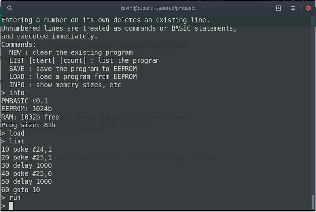

Back to BASICs with a Pro Micro microcontroller
 Back in the day -- and the "day" I'm thinking of was sometime in the mid-1970s
-- desktop computers had 8-bit CPUs, and booted to a BASIC programming
environment. There's little place for an 8-bit CPU in a modern computer --
even my watch has more computing power than this. However, 8-bit CPUs are still
pretty common in the form of microcontroller units (MCUs). These are the
small devices that operate electronic equipment, from refrigerators to TV remote
controls.
Back in the day -- and the "day" I'm thinking of was sometime in the mid-1970s
-- desktop computers had 8-bit CPUs, and booted to a BASIC programming
environment. There's little place for an 8-bit CPU in a modern computer --
even my watch has more computing power than this. However, 8-bit CPUs are still
pretty common in the form of microcontroller units (MCUs). These are the
small devices that operate electronic equipment, from refrigerators to TV remote
controls.
The Arduino range of products aimed to bring microcontrollers to the masses (well, kind of), by providing ready-assembled boards with intuitive development tools and a useful library of software components. Most of the Arduino range is based on Atmel AVR microcontrollers which appear, on the face of it, to be similar to the Z80 and 8080 CPUs of yesteryear. They have an 8-bit data bus, and a 16-bit address space (meaning that they can directly handle 64 kB of memory of all forms). They have a CPU-like instruction set, with registers and accumulators, a stack pointer and program counter -- all the stuff you'd find in a CPU of the 70s and 80s. In some ways, though, an AVR MCU is strikingly, and inconveniently, different to an old-school CPU, as I'll explain later.
Still, if you want to re-live the 1970s programming experience (and who wouldn't?) running BASIC on an Arduino-like device seems like a reasonable way to do it. It would be possible to build a "real" BASIC machine by fitting an Arduino with a keyboard and some sort of display -- an LCD character matrix, for example. However, for proof-of-concept purposes I'm happy to connect my Arduino to a terminal emulator, and just pretend. The SparkFun Pro Micro is a reasonable choice for this project, because it has built-in USB, which can be used for communications, and only costs a few pounds. Having only 32kB of flash ROM and 2kB of RAM means it has capabilities very similar to mid-70s desktop computers. Even by 1981, the idea of 1-2 kB of RAM was starting to look dated.
Fun fact: the Sinclair ZX81 had 1k of RAM built in. You could obtain an extra 16k the form of a plug-in "RAM Pack". This fitted so poorly that the ZX81 would crash if you even looked at it in a funny way. Eventually, enterprising vendors started producing "anti-crash devices". These were, essentially, wedges to put under the ZX81, which caused the RAM Pack to lean more heavily on its contacts. Ah, those were the days...
This article is about the implementation of "PMBASIC", a proof-of-concept, minimally-interactive BASIC coding environment for the Pro Micro. It will probably work on the Arduino Leonardo and, with some modifications, on other Arduino boards.
Why?
Like many computing professionals who are past the first flush of youth, I have an interest in early home computers. However there is, potentially, a less sordid aspect to this exercise. Devices like the Raspberry Pi and Arduino are being promoted as educational tools in the area of "physical computing" -- that's making motors turn and lights flash, basically. But a Raspberry Pi is not a cheap piece of equipment (in classroom terms), and it's still really a desktop computer with a few I/O pins. The Arduinos need a considerable learning investment just to get an LED to flash, because you've got to master the proprietary IDE and toolchain, which also means installing a couple hundred megabytes of software on a workstation. You can do this is a classroom setting, but not in five minutes.
Although I have no direct experience of school-level teaching, it seems plausible to me that kids will take more of an interest in programming, if they can see real-world things happening. Telling your computer to print "Hello, World" doesn't offer much satisfaction, especially when you had to type "Hello, World" in the first place. But moving a robot arm around on a desktop has a more visceral appeal.
A BASIC environment for a cheap Arduino-like device like the Pro Micro provides a way to experiment with physical computing that has almost no start-up cost. There's no need to spend more than, say, ten pounds on hardware per desk, and there's no software to install on your workstation apart from a terminal emulator. Just flash the ROM on the Arduino and you're good to go. And if you blow it up in the classroom, just throw it away and plug in a new one.
So, from the start, I wanted a version of BASIC that would offer specific Arduino capabilities -- particularly, the ability to read and write I/O pins, and do reasonably precise timing. Here's what "blink" looks like in PMBASIC, with an LED on pin 17 (which is the "receive" LED on a Pro Micro, so you don't even have to connect any additional hardware).
10 pin = 17 20 pinmode pin, 1 30 digitalwrite pin, 1 40 delay 1000 50 digitalwrite pin, 0 60 delay 1000 70 goto 10
If you want to get nearer to the bone, and work directly with the Arduino's memory-mapped I/O model, you can do the same thing like this:
10 poke #24,1 20 poke #25,1 30 delay 1000 40 poke #25,0 50 delay 1000 60 goto 10
This method, of course, requires a bit more understanding of how the hardware works -- potentially not a bad thing.
Using an interactive (even minimally-interactive) command-based interface to the Arduino provides an immediacy that is lacking if you have to compile code and burn it to flash to do simple tests. If I want to test whether a particular analog sensor (for example) is setting a particular pin to the right voltage, I just need to enter at the PMBASIC prompt:
> analogread 10, a > a 442
How?
There are plenty of minimal BASIC interpreters written in C. Some have even been ported to run on Arduino, with varying degrees of success. I wanted a complete (if simplistic) editing environment, and I did try to graft one onto an existing interpreter. However, I never ended up with anything that both (a) worked and (b) would fit into a Pro Micro.
BASIC interpreter
The nearest I could find to a simple BASIC interpreter that would fit the bill was uBasic, by Adam Dunkels, from around 2014. In end, I could not use this code in its existing form, for a number of reasons, but I found its general approach useful.
The approach to parsing BASIC taken by uBASIC, and now by PMBASIC, is a mixture of formal syntax tree descent, and ad-hoc pattern recognition, done on a line-by-line level. For example, consider a BASIC statement like this:
10 PRINT "t=", t, " msec"
We could build this statement into a formal syntax tree, with all
the various arguments in place, and then process it in that form. However,
we know that PRINT processes all its arguments sequentially,
with no regard for more detailed structure. The statement ends at the
end of the text line, whatever happens to be on the next line.
So, rather than building a
syntax tree, we just need to loop over the arguments and process each one.
But consider this statement:
10 PRINT "t=", q + (t - r) / 1000, " msec"
We can't just parse the arithmetic expression
q + (t - r) / 1000 as a sequence of tokens, strictly
left-to-right. We need to evaluate the bracketed expression
(t - r) first, then divide by 1000, then add q.
At this point, we really do have to parse against a proper syntax tree, so
that the expression elements are evaluated in the right order. PMBASIC
uses the familiar recursive-descent method for this task, which does
absorb a certain amount of stack. However, as we're printing the results
as we go, there's no need to build an abstract syntax tree or anything
of that complexity.
A similar approach can be used with more complex constructs, like this:
10 FOR i = 1 to p 20 PRINT i 30 NEXT
This FOR...NEXT construct does span multiple lines, but all we need to control its execution is in line 10. So what we need to do is to store the line number "10" and the loop counter in a stack, then execute the following statements until NEXT. At that point, we check what is the top of the FOR stack, and make the appropriate tests. Then we can either jump back to line 10, or pop the FOR information off the stack and continue. In practice, we won't store the line number in the stack, but the offset of that line in the program text, which is a bit faster.
This semi-formal approach to parsing works well with a language that is essentially line-by-line, like BASIC, and it uses minimal resources. A more flexible language (I considered Lua, for example) requires a more formal approach to parsing, with a lot more parsing logic, requiring a lot more memory. There is actually an "eLua" specifically for embedded systems, but I couldn't get it even close to fitting into the flash of a Pro Micro.
The problem with PMBASIC's approach to parsing is that it's horribly inflexible. Any trivial addition of features requires changing the parser, which means another round of testing. Also, tokenization, parsing, and execution are hopelessly entangled, which makes things like error recovery really awkward.
The problem with error recovery is that you can't just exit(0)
your program on error in a microcontroller, even if that would be
an acceptable way of dealing with errors in a desktop application.
An error has to deliver the
user neatly back to the editor, so changes can be made. This means inserting
fairly extensive error checks into all parts of the parser and tokenizer.
This error handling contributes perhaps 30% of the total size
of PMBASIC.
Editor
PMBASIC has only the most rudimentary editing facilities. There are a couple of reasons for that. First, handling editing keys other than "backspace" requires a knowledge of the terminal's control sequences. Various terminals, and terminal emulators, exist and I don't want to have to provide PMBASIC with a terminal capability database. Frankly, it's difficult enough even to be sure which control code corresponds to the backspace key. Parsing ANSI-style keyboard escape codes is a programming task of about the same level of complexity as parsing BASIC.
Second, and probably more important -- if you're operating PMBASIC from a desktop computer with a terminal editor, you can just cut-and-paste code from the desktop into the terminal.
Consequently, PMBASIC has an early-70s approach to editing BASIC: if you type a line that starts with a number, it's assumed to be part of the program. If you type something that doesn't start with a number, it's either a BASIC statement to be executed immediately, or it's a command. Commands are non-program verbs like LIST, LOAD, SAVE, and NEW. To change a line in the program, just type a new one with the same line number. To add a line between two existing lines, just enter it with a line number between the existing numbers. To delete a line, just enter the line number with no text. You probably wouldn't want to enter more than a dozen or so lines of code this way but, in a pinch, it does work.
LOAD and SAVE are implemented to store and retrieve program code from the Arduino EEPROM. The Pro Micro has 1kB of EEPROM, which is roughly the same amount of RAM available to store a program, so that's a happy coincidence. In the days when line-based BASIC editors were the latest thing, we stored programs on cassette tape; I've no wish to relive that experience.
The result
Here's a screenshot of a PMBASIC session, seen in the Minicom terminal emulator on a Linux system.

Because parsing and program execution are so closely interconnected, PMBASIC is not going to be fast. Here is a timing test session:
5 l = 100 10 millis a 20 for i = 1 to l 30 for j = 1 to l 40 rem 50 next 60 next 70 millis b 80 print l * l " loops in " b - a " msec" > run 10000 loops in 17618 msec
That's about 500 do-nothing loops per second. It's nowhere near as fast as a similar piece of C code, which might achieve 50,000 loops per second. Still, it's fast enough for experimental purposes. It's fast enough, for example, to scan a keyboard matrix -- provided you don't want to do a whole lot when a key is pressed.
PMBASIC has many, many limitations. Most obviously, it has no support for floating-point math. It wouldn't be hard to add that support, and there's plenty of room left in the flash ROM, but speed would suffer, as the Pro Micro has no hardware floating-point processor. There's no way to define functions, or to pass data between subroutines except in variables. And so the list goes on. Can these limitations be overcome? Certainly. Is it worth the effort? Well...
Problems...
The limitations of working with an 8-bit microcontroller with 2k RAM shouldn't need much explaining. In fact, though, implementing a BASIC interpreter (or any interpreter) in an Arduino is even more difficult than it first appears. It's more difficult that it is on "real" 8-bit CPUs like the 8080 and Z80.
Most real CPUs are based on some form of Von Neumann design. The VN architecture is so widespread that we hardly even think about it. In a VN system, program and data memory are freely mixed -- the RAM of my desktop PC will contain, at any given time, a mixture of data and program code.
AVR devices, including Arduinos, implement a "Harvard" architecture, in which program and data memory are completely separate. Program code cannot, for the most part, read data stored in the flash ROM; nor can executable code be placed into RAM. What this means is that, although the static and textual data that accompanies the program is burned into flash when the program is uploaded, the first thing that the program has to do is copy all that data into RAM. This must happen even for data that will never change. If you're using regular development tools this is taken care of automatically -- as a developer you don't have to control the process. But if you don't control it, it's very easy to fill up the RAM with read-only data.
A parser, for any language, will store and process a lot of text. Most obviously there will be tables of keywords and symbols, error messages, prompts, and instructional messages. We simply can't copy all this stuff into RAM, and still have any space left to store a program in.
It's possible to subvert the compiler's usual behaviour, and leave all the static data in flash. But then you have to take care of copying it into RAM when you need it, because it can't be read directly from flash at runtime. You'll either need to allocate RAM for it dynamically, or rely on fixed buffers in certain areas of RAM. In either case, the process of copying the data from flash to RAM is comparatively slow.
Managing data this way is not too difficult for relatively large blocks of data, that are used infrequently, like error messages. For symbol tables and other parser structures, which are potentially going to be used hundreds of times per second, it's both awkward and slow. Worse, it leads to a program structure where components have complex and unmanageable dependencies on one another. Although it's written in C, PMBASIC is structured rather like an assembler program, with all the problems that entails.
The only real solution to this problem is to use a microcontroller with a completely different architecture -- perhaps one based on ARM cores. As I write this, the Raspberry Pi Pico has just been announced, and it appears to have a radically improved specification from a Pro Micro, for about the same price. The Pico appears to be capable of running Python, but whether it can do it in an interactive session, I'm not sure. I'm not even sure whether the USB port on the Pico can be used for terminal communication like the one on the Pro Micro can. I shall try to find out, when they become available.
Further work
At present, PMBASIC lacks support for many features that are needed to implement more than toy programs. It would not be all that hard to add
- floating-point numbers,
string manipulation,
arrays,
function calls with parameters,
etc.
What would radically improve the usefulness of PMBASIC would be external storage, so the RAM could be used just for variables and stacks. Doing this would require adding at least a minimum of file management. It isn't hard to add SD card support to an Arduino, but we're in the realm of specialist components. Doing this will bring the total cost much closer to Raspberry Pi territory.
Closing remarks
The full source code for PMBASIC is available in my GitHub repository. It clearly is possible to run an interactive BASIC environment -- albeit a rudimentary one -- on a SparkFun Pro Micro attached to a terminal. Because of the limitations of the AVR architecture, it's difficult to do it efficiently without some really fiddling coding techniques, and I'm unsure whether it's worth developing the project further. Newer, more highly specified devices like the Pico might change the picture completely -- that remains to be seen.